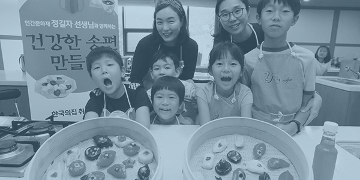
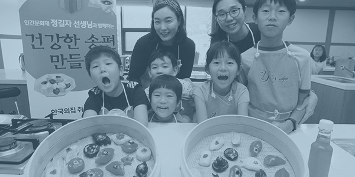

인간문화재지킴이
한독은 문화재청과 함께 인간문화재의 건강을 보살펴 드리는 <인간문화재 지킴이> 활동을 하고 있습니다.
“나라의 살아있는 보물,
인간문화재의 건강 지켜 우리 전통 문화의 가치를 지킵니다!”
한독은 문화재청과 함께 인간문화재의 건강을 보살펴 드리는
<인간문화재 지킴이> 활동을 하고 있습니다.
<인간문화재 지킴이>는 나라의 살아있는 보물이라 할 수 있는 인간문화재의 건강을 살펴드림으로써 우리 전통문화를 계승·발전시키자는 마음에서 시작됐습니다.
지난 2009년부터 전국 11개 병원과 협력해만 50~80세의 의료급여 수급을 받고 있는 인간문화재에게 매년 종합건강검진(짝/홀수년 격년제 검진)을 무상으로 제공하고 있습니다.
중요무형문화재는 연극·음악·무용·공예기술 등 무형의 문화적 소산으로서 역사적·예술적 가치가 큰 무형문화재 가운데 그 중요성을 인정하여 국가에서 지정한 문화재입니다.
하지만, 중요무형문화재 중에서는 전수 자가 없어 명맥이 끊길 위기에 처한 전통문화도 있습니다. 그래서 한독은 인간문화재들이 건강하게 전수활동을
하실 수 있도록 돕는 것뿐 아니라 잊혀져 가는 우리 전 통문화의 가치를 다음 세대에게 전하기 위한 활동도 함께 하고 있습니다. 인간문화재와 함께
우리 전통문화를 직접 보고 듣고 체험할 수 있는
<인간문화재 지킴이> 나눔공연,
<인간 문화재 지킴이> 참여마당을 통해 전통문화의 아름다움과 가치를 더 많은 분들과 함께 나누어 가겠습니다.
 
